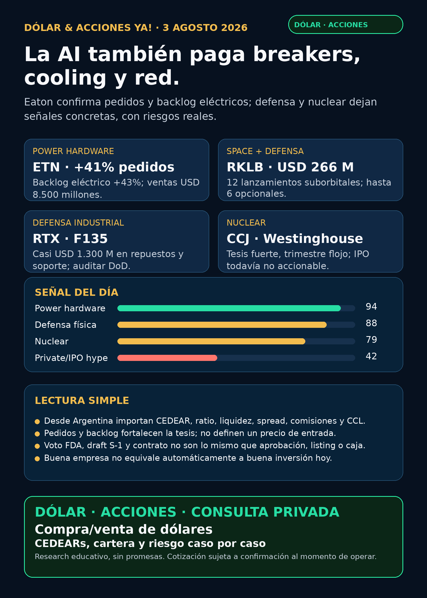

La AI también paga breakers, cooling y red.
Eaton confirma pedidos y backlog eléctricos; Rocket Lab y RTX dejan contratos de defensa; nuclear gana profundidad con riesgos concretos.
Texto WhatsApp
Placa del día

Dólar & Acciones YA — Stock Radar — 03/08
Fecha de edición: 2026-08-03. Corte público: 08:46 ART. Research educativo para Argentina y carteras globales. Mercado de Estados Unidos cerrado; no se publican precios de acciones. No es recomendación personalizada de compra ni de venta.
Lectura simple del día
La señal más limpia aparece en el hardware eléctrico que hace posible la expansión de AI. Eaton (ETN) reportó ventas trimestrales de USD 8.500 millones, crecimiento orgánico de 14%, pedidos acumulados de doce meses +41% en Electrical Americas y backlog eléctrico +43%. En criollo: no alcanza con comprar GPUs; hay que distribuir y proteger la electricidad con breakers, switchgear, tableros, subestaciones y obra.
La segunda señal es defensa física con contratos verificables. Rocket Lab (RKLB) obtuvo USD 266 millones por 12 lanzamientos suborbitales para U.S. Space Force, con opción de hasta seis adicionales. RTX anunció casi USD 1.300 millones para repuestos y soporte del motor F135. La tesis no depende de likes: depende de backlog, funding, entregas y margen.
La tercera lección es que una narrativa estructural puede convivir con un trimestre imperfecto. Cameco (CCJ) mantuvo su outlook de producción y describió mejores condiciones de contratación y precio de uranio a largo plazo, pero sus ingresos y ganancias trimestrales bajaron. Westinghouse presentó confidencialmente un borrador de S-1 para una posible IPO, todavía sin precio, tamaño ni fecha.
Las señales están ordenadas por valor educativo y calidad de evidencia, no como ranking de compra. Buena empresa ≠ buena inversión al precio actual ≠ buen instrumento para Argentina ≠ tamaño correcto dentro de una cartera.
Capa Argentina: dólar, MEP/CCL y CEDEARs
Datos públicos consultados a las 08:46 ART del domingo 03/08:
- BlueLytics: dólar oficial vendedor ARS 1.511,00 y blue vendedor ARS 1.560,00; actualización 03/08 08:45 ART.
- CriptoYa: USDT ask ARS 1.579,05 y bid ARS 1.577,46; actualización 03/08 08:46 ART.
- MEP AL30 24hs ARS 1.505,41 y CCL AL30 24hs ARS 1.580,51; ambos tienen timestamp de cierre del 31/07 16:59 ART. No son cotizaciones intradiarias del broker.
En criollo: el MEP permite dolarizar pesos mediante bonos dentro de Argentina. El CCL conecta precios locales con el exterior y suele impactar en los CEDEARs. Un CEDEAR representa una fracción de una acción extranjera, pero tiene ratio, spread —diferencia entre mejor comprador y vendedor—, liquidez, comisiones y CCL implícito. Como hoy es domingo, cualquier decisión real exige revalidar subyacente USD, ratio, book y spread cuando abra el mercado.
ETN, RKLB, RTX, CCJ, AMZN, REPL, PFE y MOD tienen instrumentos globales. CEDEAR, ratio, volumen, spread y disponibilidad local no fueron revalidados en esta corrida. Sin ese chequeo quedan como radar internacional/global o proxy local pendiente, no como ejecución Argentina.
Tesis central
El segundo peaje de AI es electricidad física y está apareciendo en pedidos y backlog, no sólo en presentaciones. Eaton confirma demanda real en distribución eléctrica; Quanta/Hyosung refuerzan breakers y subestaciones; Modine sostiene crecimiento esperado en cooling para data centers.
El moat —ventaja difícil de copiar— está en capacidad industrial, certificaciones, supply chain, installed base, ingeniería, servicio y lead times. El caveat: backlog no es caja inmediata y crecimiento no define precio de entrada. Hay que vigilar conversión a revenue, márgenes, capacidad, capex y valuación.
Señales educativas del día
1. Grid y power hardware — Eaton (ETN)
- Qué pasó: Q2 sales de USD 8.500 millones (+21%; crecimiento orgánico +14%). Pedidos rolling-12m: Electrical Americas +41%, Electrical Global +33% y Aerospace +17%. Backlog: Electrical +43% y Aerospace +28%. Margen de segmentos: 23,1%. La compañía elevó su guía de crecimiento orgánico.
- Fuente primaria (31/07): SEC EX-99: https://www.sec.gov/Archives/edgar/data/1551182/000155118226000027/etn06302026exhibit99.htm
- Lectura en criollo: AI y electrificación demandan equipamiento que distribuye, corta y protege energía; el cuello de botella no termina en la turbina o el transformador.
- Riesgo: ciclo industrial, valuación, capacidad, supply chain y conversión del backlog.
- Accionable internacional/global:
ETNcotiza en Estados Unidos. - Accionable local Argentina: CEDEAR, ratio, liquidez y spread no revalidados; no accionable por ahora sin pantalla de broker.
- Estado: señal fortalecida.
2. Space + defensa — Rocket Lab (RKLB)
- Qué pasó: contrato récord de launch por USD 266 millones con U.S. Space Force para 12 lanzamientos suborbitales, con opción de hasta seis adicionales. Primer lanzamiento: no antes de fines de 2026.
- Fuente primaria (31/07): Rocket Lab oficial: https://rocketlabcorp.com/updates/record-contract-rslp-kodiak/
- Lectura en criollo: responsive space e hypersonic testing ya generan backlog concreto; no es sólo una historia sobre cohetes futuros.
- Riesgo: ejecución, calendario, margen, capex, financiación y concentración gubernamental.
- Accionabilidad: acción global; acceso local/CEDEAR/spread no revalidado.
- Estado: fortalece tesis / vigilar ejecución.
3. Defensa industrial — RTX / Pratt & Whitney (RTX)
- Qué pasó: contrato undefinitized de casi USD 1.300 millones para repuestos F135, paquetes de repuestos desplegables, depósitos y support equipment para clientes F-35. La red atiende 42 bases y 13 barcos.
- Fuente del issuer (31/07): RTX Newsroom: https://www.rtx.com/news/news-center/2026/07/31/rtxs-pratt-whitney-awarded-1-3-billion-f135-sustainment-contract
- Caveat: el comunicado fue verificado en browser, pero la primaria DoD quedó pendiente. No se trata como obligación final cerrada hasta auditar PIID/award.
- Lectura en criollo: el moat de defensa también está en repuestos, mantenimiento y soporte global, no sólo en fabricar aviones nuevos.
- Riesgo: contrato todavía no definitivo, apropiaciones, ejecución y supply chain.
- Estado: fortalece tesis / auditar DoD.
4. Nuclear y uranio — Cameco (CCJ) + Westinghouse
- Qué pasó: Cameco reportó revenue Q2 de C$813,8 millones versus C$877,0 millones y net earnings de C$25,2 millones versus C$320,9 millones. Mantuvo outlook anual de producción y describió mejores condiciones de contratación y precios de uranio a largo plazo. Westinghouse presentó confidencialmente un borrador de S-1 para una posible IPO.
- Fuentes primarias (31/07): Cameco SEC: https://www.sec.gov/Archives/edgar/data/1009001/000119312526326768/d125942dex991.htm — Westinghouse: https://www.sec.gov/Archives/edgar/data/1009001/000119312526327250/d307413dex991.htm
- Lectura en criollo: la tesis nuclear puede fortalecerse a largo plazo y, al mismo tiempo, sufrir problemas operativos o earnings flojos en un trimestre.
- Riesgo: producción, pricing contractual, ramp-up, ciclo del uranio y valuación.
- Accionabilidad:
CCJes público en NYSE/TSX. Westinghouse sigue privada;CCJ, Brookfield Renewable y Brookfield son proxies imperfectos. - Estado: tesis estructural fortalecida / trimestre débil / IPO no accionable.
5. Biotech regulatoria — Replimune (REPL)
- Qué pasó: el comité asesor FDA votó 10-3 que la eficacia de RP1 + nivolumab en melanoma avanzado es evaluable y clínicamente significativa.
- Fuente primaria (31/07): SEC EX-99.1: https://www.sec.gov/Archives/edgar/data/1737953/000110465926088857/tm2621708d1_ex99-1.htm
- Lectura en criollo: es una señal regulatoria favorable, no una aprobación. El regulador puede decidir distinto al comité.
- Riesgo: small-cap binaria, decisión FDA, financiación y comercialización.
- Accionabilidad: ticker global; liquidez y acceso local no verificados.
- Estado: fortalece tesis / no es aprobación.
6. Cloud / AI infra — Amazon (AMZN), cifras corregidas
- Qué pasó: Q2 2026 sales de USD 200.600 millones (+20%), AWS de USD 42.200 millones (+37%) y AWS operating income de USD 16.600 millones. El flujo de caja libre de los últimos doce meses fue -USD 7.600 millones, frente a +USD 18.200 millones, por inversión en AI. Other income pre-tax fue USD 53.400 millones, principalmente por Anthropic.
- Fuente primaria (31/07, reabierta con encabezados de período): SEC EX-99.1: https://www.sec.gov/Archives/edgar/data/1018724/000101872426000024/amzn-20260630xex991.htm
- Corrección de integridad: una lectura anterior tomó la columna comparativa 2025 como trimestre actual. Estas son las cifras correctas de Q2 2026.
- Lectura en criollo: AWS acelera, pero construir la fábrica AI consume caja; una revaluación de Anthropic no es caja del negocio diario.
- Riesgo: capex, retorno demorado y calidad del EPS.
- Estado: fortalece demanda / vigilar capex y calidad de ganancia.
7. Cooling de data centers — Modine (MOD)
- Qué pasó: mantuvo outlook FY2027 y espera que Data Center sales crezcan entre 60% y 80%. La separación de Performance Technologies y combinación con Gentherm agrega riesgo de ejecución.
- Fuente primaria (31/07): SEC 425: https://www.sec.gov/Archives/edgar/data/67347/000110465926089191/tm2621852d1_425.htm
- Lectura en criollo: la AI también paga refrigeración; sin sacar el calor, el rack no escala.
- Riesgo: transacción, capacidad, mezcla de negocio y conversión de demanda.
- Estado: señal fortalecida / vigilar transacción.
Watchlist priorizada de hoy
Ordenada por valor educativo y evidencia, no como ranking de compra.
- RKLB: señal fortalecida por contrato Space Force de USD 266 millones. Vigilar ejecución, margen, capex y financiación.
- AAPL: sigue vigente la señal Q3 FY2026: revenue de USD 94.040 millones, services de USD 27.420 millones y EPS de USD 1,57; aproximadamente USD 0,11 del EPS vino de una reversión arancelaria extraordinaria. Buen negocio ≠ moat AI probado.
- HOOD: sigue vigente Q2 total net revenue de USD 1.308 millones y net income atribuible de USD 561 millones. Vigilar ciclicidad de trading/crypto y adquisiciones.
- NVDA, PLTR, TSM, MU, GOOGL/GOOG, TSLA y ASML: revisados; sin señal nueva primaria más fuerte desde el corte anterior. No se rellenó con previews ni upgrades de analistas.
- SNDK, CBRS y AVGO: revisados; sin filing nuevo material superior para elevar hoy.
- RVI: sin holdings/NAV nuevos verificados. Último evento fresco: venta chica del sponsor de 4.480 shares por aproximadamente USD 112.420. Sigue como fondo cerrado a vigilar, no operating company ni oportunidad automática.
- Gold /
GLD/GOLD/B: la identidad sigue ambigua. Metal, ETF y tickers no son equivalentes.Btampoco es Broadcom; Broadcom esAVGO. Sin instrumento exacto no se publica precio ni accionabilidad.
Energía, grid y power hardware
Grid, transformadores y equipamiento
- Eaton (
ETN): señal principal por pedidos y backlog eléctricos. - Quanta (
PWR) + Hyosung HICO: sigue vigente Q2 con backlog de USD 43.980 millones y JV 50/50 para breakers HV/EHV en Estados Unidos. - HD Hyundai Electric (
267260.KS): medios coreanos reportaron su transformador UHV número 1.000 en Alabama, pero falta comunicado primario. Corea sigue como radar global; acceso Argentina no verificado. - Carril obligatorio revisado: Hitachi Energy/Hitachi (
6501.T/HTHIY), Siemens Energy (ENR.DE, no Siemens AG), GE Vernova (GEV), Hyosung Heavy (298040.KS), Virginia Transformer y Delta Star. - No apareció una señal primaria fresca más material en esos nombres. Virginia Transformer y Delta Star siguen privadas y no accionables directas.
Generación, nuclear y petróleo/gas
- Cameco/Westinghouse: señal mixta central: nuclear estructural más profunda, trimestre flojo e IPO sin términos.
- Chevron (
CVX): Q2 earnings de USD 12.100 millones, record U.S. production y producción global +20%. El acuerdo power a 20 años con Microsoft para West Texas es de junio: refuerza la tesis, pero no es catalizador nuevo del 31/07. Fuente: https://www.sec.gov/Archives/edgar/data/93410/000009341026000162/a06302026ex9918-k.htm - Dominion (
D): reafirmó guidance 2026; operating earnings Q2 de USD 0,79 por acción versus USD 0,75. Señal estable, no cambio de tesis. Fuente: https://www.sec.gov/Archives/edgar/data/715957/000119312526326812/d-ex99.htm
Energía Argentina
- Pampa Energía (
PAMPlocal /PAMADR): sigue vigente el handover de Rincón de Aranda/Anticlinal Campamento desde agosto. Falta medir aporte a producción, caja y guidance. - Vista (
VIST): recompra de 50.000 shares por aproximadamente MXN 59,07 millones. Es una señal financiera menor, no un catalizador operativo. Fuente: https://www.sec.gov/Archives/edgar/data/1762506/000119312526326738/d898312d6k.htm - YPF, TGS/TGSU2 y CEPU: revisados, sin señal primaria nueva fuerte desde el corte anterior.
- Para Argentina: ticker local/CEDEAR, precio, volumen, CCL implícito, spread y comisiones deben verificarse en broker antes de cualquier decisión.
Pharma / salud
REPL: adcomm 10-3 favorable para RP1; fortalece, todavía no aprobación.PFE: dos Phase 3 de LITFULO en vitiligo no segmentario cumplieron endpoints facial y corporal; Pfizer planea filings globales para adultos. Fuente primaria: https://www.pfizer.com/news/press-release/press-release-detail/pfizer-announces-positive-topline-phase-3-results-litfuloCAPR: sigue vigente el voto adverso 3-9 sobre eficacia de Deramiocel; PDUFA 22/08/2026. Alto riesgo binario.NVO: la señal ZEUS de reducción de 20% en MACE sigue estructuralmente relevante, pero no apareció una primaria nueva superior en esta corrida.AZN: AVANZAR/Datroway + rilvegostomig mantiene PFS positivo; OS inmadura.LLY,MRK,AMGNy resto de big pharma/GLP-1: revisados sin catalyst primario nuevo más fuerte. Se descartaron titulares reciclados de “FDA approved”.
Radar amplio fuera de watchlist
- Defensa/guerra física:
AVAV, GE Aerospace (GE),RTX,LMT,NOC,GD,HWM,KTOS,BA,ITA/XARrevisados. Las señales nuevas más fuertes fueronRKLByRTX;RTXtodavía requiere auditoría DoD. - Space/orbital AI:
SPCX/SpaceX, Starlink, Starship,RKLB, sat-to-mobile y orbital compute revisados.RKLBdejó contrato verificable; no apareció filing material nuevo enSPCX. - Autonomous mobility/physical AI: Tesla, Waymo/Alphabet, Uber, Zoox/Amazon, Joby y partners revisados. La noticia sobre aprobación de Zoox para robotaxis pagos quedó detrás de Reuters y sin primaria NHTSA usable: no verificado / no se eleva.
- Fintech/AI agents:
HOODmantiene señal de negocio positiva. Los agentes de trading siguen exigiendo datos correctos, paper/read-only, ledger, límites de riesgo y aprobación humana antes de dinero real. - Crypto gobernado: revisado sin input on-chain nuevo fuerte. Carril separado de educación, infraestructura y proxies regulados; no token trade.
- Commodities, bancos, consumo defensivo, longevity/de-extinction: revisados; sin señal verificable superior para elevar hoy.
Private markets e instrumentos empaquetados
- RVI — Robinhood Ventures Fund I: sigue siendo un closed-end fund/private-tech wrapper. Sin NAV, premium, holdings y liquidez frescos no se eleva. La venta chica del sponsor es señal de float/liquidez, no catalyst.
- RVII: el roadshow comienza hoy 03/08 a las 09:00 PT, pero el propio issuer aclara que el registro todavía no era efectivo y que no podían venderse shares antes de efectividad. Falta precio, listing, holdings, NAV y liquidez. Fuente: https://robinhood.com/us/en/newsroom/RVII-roadshow-aug3/ — no accionable al corte.
- Westinghouse: private/potential IPO sin prospecto público, precio, tamaño ni fecha. Proxies públicos imperfectos: Cameco y Brookfield.
- DXYZ, ARKVX, AGIX, XOVR, VCX y Forge: revisados sin filing/fact sheet nuevo que mejore holdings, NAV, premium y liquidez.
- Argentina/global: wrappers privados y Corea/OTC no deben presentarse como fáciles. Falta broker habilitado, condición del inversor, liquidez, fees, NAV/premium y compliance.
Red flags / hype para ignorar
- “Pedidos eléctricos +41% = todo viene de AI”: no está demostrado.
- “Backlog = caja inmediata”: falso; faltan ejecución, calendario y margen.
- “Contrato RKLB/RTX = revenue completo hoy”: falso; importan funding, opciones, obligaciones y entregas.
- “Nuclear fuerte = Cameco no puede tener un trimestre flojo”: falso.
- “Draft S-1 confidencial = Westinghouse ya se puede comprar”: falso.
- “Adcomm 10-3 = FDA aprobó RP1”: falso.
- “AWS +37% = la caja también sube”: falso; el FCF TTM fue negativo por inversión.
- “Roadshow de RVII = instrumento listo”: falso; falta efectividad, precio y listing.
- “Gold / GLD / GOLD / B son lo mismo”: falso; el instrumento exacto sigue bloqueado.
Qué mirar después
ETN: conversión de pedidos/backlog, capacidad, margen y exposición real a data centers.PWR/Hyosung HICO: puesta en marcha, capacidad, pedidos y márgenes del JV.RKLB: funding, opciones, calendario, margen y ejecución de los lanzamientos.RTX: contrato/notice DoD o PIID; obligaciones iniciales y términos definitivos.CCJ/Westinghouse: producción, contracting y posible filing público con tamaño, rango, shares, float y efectividad.REPL: decisión FDA; no confundir voto asesor con aprobación.AMZN: capex, retorno de AWS, flujo de caja libre y peso de marks privados en EPS.MOD: crecimiento real de Data Centers y ejecución de la transacción con Gentherm.- Argentina: MEP/CCL intradiario, CEDEAR disponible, ratio, book, spread y comisiones cuando abra el mercado.
Portfolio/base Mi Simulación
La cartera de Ricardo fue liquidada, devuelta y terminada según estado vigente del 24/06. No hay posiciones activas ni P&L real que reportar. Stock Radar queda como vigilancia para una próxima compra o un nuevo inversor.
Recibo visible de cobertura
Revisado: watchlist base; AI infra/semis; energéticas argentinas; transformadores, breakers y power hardware; cooling; pharma/GLP-1/oncología; defensa/aeroespacial; space/private wrappers; autonomía/physical AI; fintech/AI agents; crypto gobernado y mercado amplio. Los carriles sin señal primaria nueva fuerte quedaron marcados, no omitidos.
Servicio privado
Dólar · Acciones · Consulta privada. Si querés comprar o vender dólares, entender CEDEARs, armar una cartera o revisar riesgo, se ve por privado caso por caso. Cotización sujeta a confirmación al momento de operar.
Disclaimer
Esto es research educativo para decisión humana. No es asesoramiento financiero personalizado ni instrucción de compra/venta.